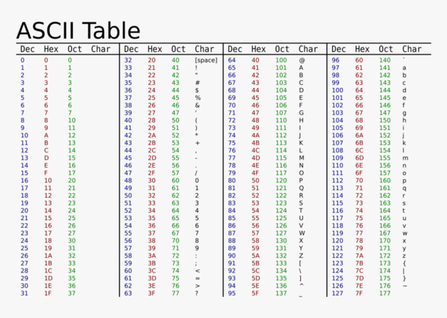

Het binaire stelsel is een manier om informatie weer te geven met alleen maar twee cijfers: 0 en 1. In de informatica gebruiken we dit stelsel omdat computers op deze manier werken. Ze begrijpen alleen elektrische signalen, die ofwel aan (1) ofwel uit (0) zijn. Een bit is de kleinste eenheid van informatie in het binaire stelsel. Het staat voor "binary digit", oftewel een binair cijfer. Als je meerdere bits samenvoegt, krijg je een byte. Een byte bestaat uit 8 bits en kan van 0 tot 255 verschillende waarden weergeven, dus in totaal 256 (2^8). Het binaire stelsel is essentieel in de informatica omdat het de basis vormt voor alle gegevensverwerking. Alle soorten informatie, zoals tekst, afbeeldingen en geluid, worden uiteindelijk omgezet in binaire code zodat de computer deze kan begrijpen en verwerken. Door het gebruik van het binaire stelsel kunnen computers efficiënt en betrouwbaar functioneren.
In het binaire stelsel starten we met tellen aan de rechterkant, waarbij we alleen de cijfers 0 en 1 gebruiken.Het tellen begint bij 0. Na de 0 komt 1. Zodra je 1 hebt bereikt, ga je naar de volgende positie. Dit betekent dat je de volgende waarde in de reeks, 2, moet schrijven als '10'. Dit is zo, want als je het getal 2 wilt weergeven, moet je de eerste positie (die je net op 1 hebt gezet) opnieuw op 0 zetten en de tweede positie op 1 zetten. Dit geeft je '10'. Je blijft dit proces herhalen en telkens wanneer je de maximumwaarde voor een positie bereikt, ga je naar de volgende positie. Zodra we een 1 plaatsen, kunnen we niet verdergaan naar 2 en verplaatsen we ons naar de volgende positie. De tweede positie staat voor 2¹, wat gelijk is aan 2.
De ASCII-tabel (American Standard Code for Information Interchange) is een coderingssysteem dat nummers toekent aan verschillende tekens, zoals letters, cijfers, leestekens en speciale symbolen. Deze tabel bevat 128 unieke tekens, die elk worden weergegeven door een binaire code van 7 of 8 bits. ASCII is essentieel in computers en communicatiesystemen wereldwijd, omdat het helpt bij het opslaan en uitwisselen van tekstuele informatie. Dit systeem zorgt ervoor dat menselijke teksten worden omgezet naar een formaat dat computers begrijpen. Hieronder is de ASCII-tabel te zien.
